作品一覧
私、中村造船はTNTキャノンの開発と、それを搭載した戦車、戦艦を作ることを得意としています。
ここでは、私の作品の集大成である船系作品と、それに搭載している装置を解説します
ver1.16 以降 環境
全方位TNTキャノンを搭載した作品を中心に展開。キャノンの射程と精度の向上、インターフェースの開発が進行中。
-
gamepad
16方位武器システム
解説動画
艦船
-
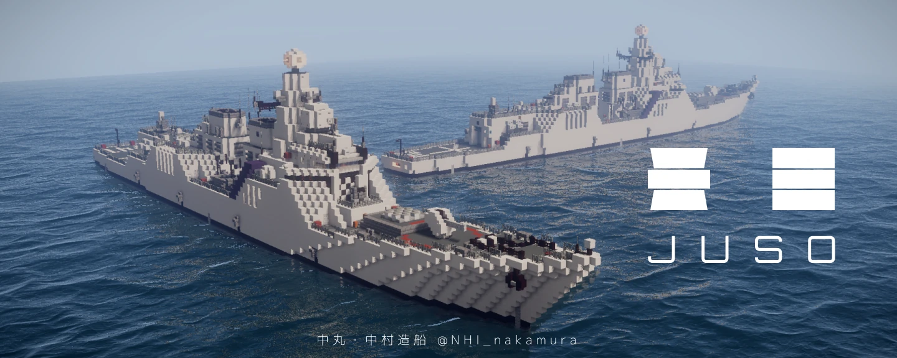
十三級ミサイル駆逐艦
gamepad方角を選んで即発射！16方位武器システムを初搭載
-
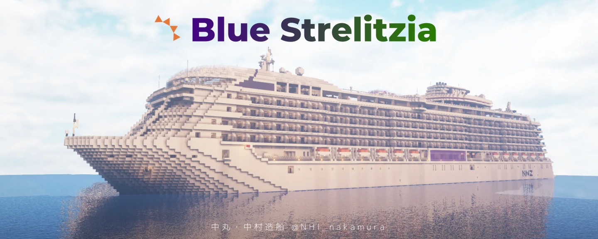
Blue Strelitzia級クルーズ客船
エレベーターを搭載したプレミアムクラスクルーズ客船
-
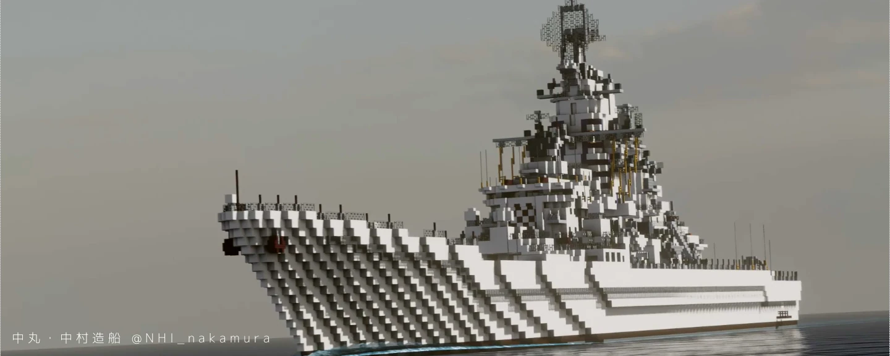
斑鳩級ミサイル巡洋艦
gamepad弾頭数1000級の大火力を16方位武器システムからお手軽に投射
回路・装置
ver1.7 環境
MOD “HAC” を利用した砲塔を搭載する作品を中心に展開。TNTキャノン技術と平行し、下記の各種機能を持つ制御システムを開発しました。
世代間には装置と兵装の互換性がありません。
夢洲世代作品群
-
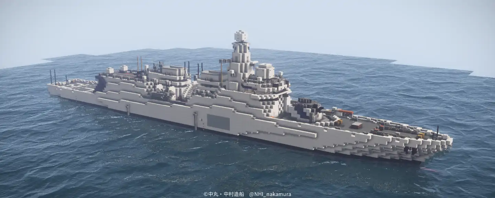
夢洲級フリゲート
motion_sensor_active vertical_align_top redo wifi最新機能に対応しつつ小型化を実現したエントリーモデル
-
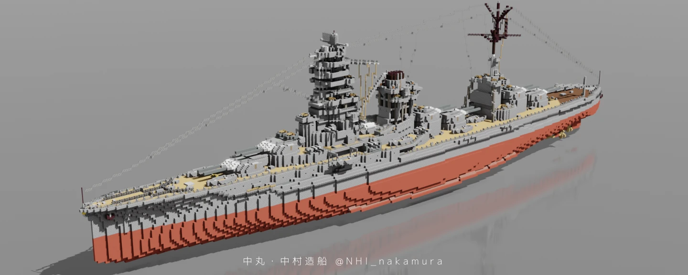
伊勢
motion_sensor_active再現艦。新模擬戦ルールに基づいたTNTキャノンを搭載。
-

米艦三隻セット
motion_sensor_activeウースター級、ギアリング級、ボルチモア級。ウスターマウントを採用した模擬戦新ルール向け再現艦。
- 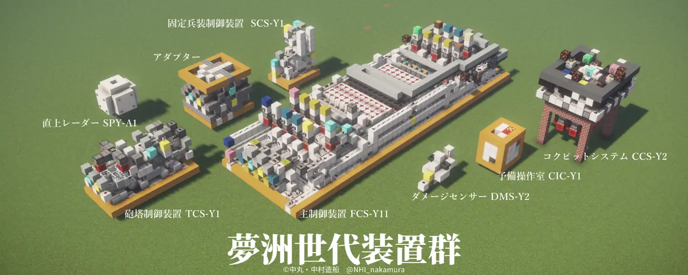夢洲世代装置群
- 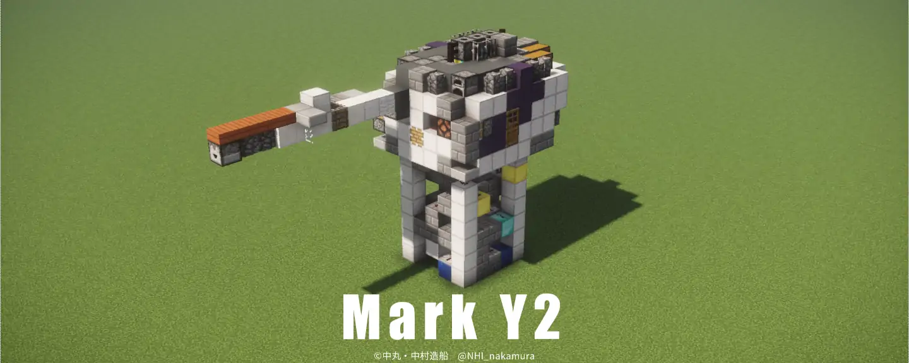Mk.Y1 幅7単装砲
有馬世代作品群
-
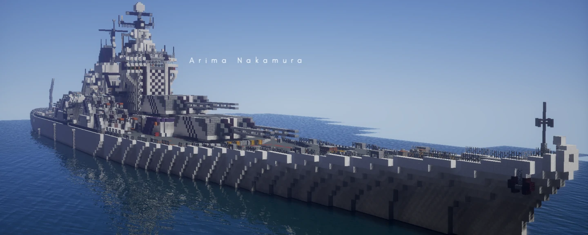
有馬・中村級戦艦
motion_sensor_active vertical_align_top redo wifi中村の最新フラッグシップモデル。最も高い攻撃、及び防御性能を持つ。基本制御装置として第二世代四天王プラットフォームを搭載。
-
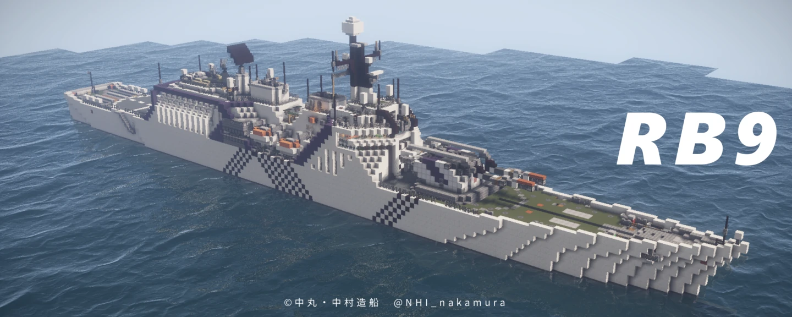
RB9級駆逐艦
motion_sensor_active vertical_align_top redo wifi第二世代四天王プラットフォームをはじめて搭載した艦。
- 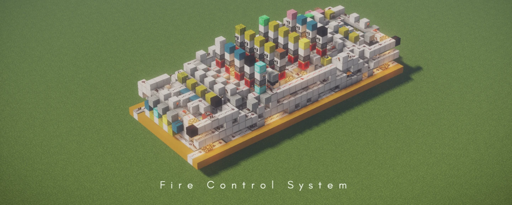有馬世代 FCS-F1
- 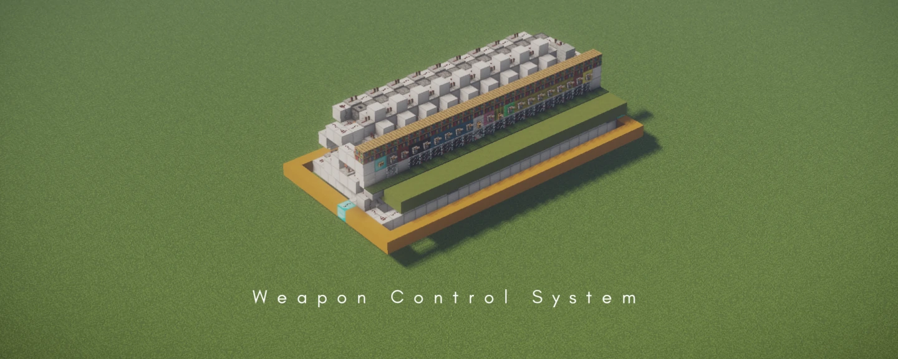有馬世代 WCS-F1
- 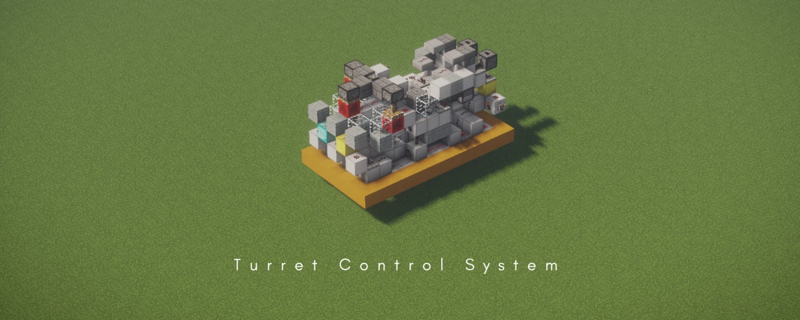有馬世代 TCS-F1
- 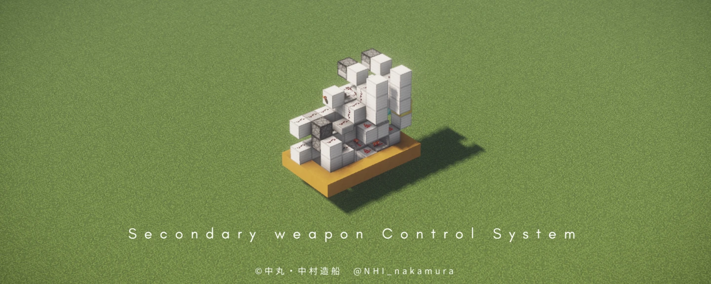有馬世代 SCS-F1
- 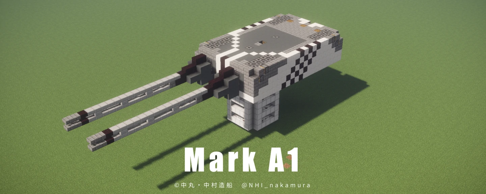Mk.A1 戦艦用連装主砲
- 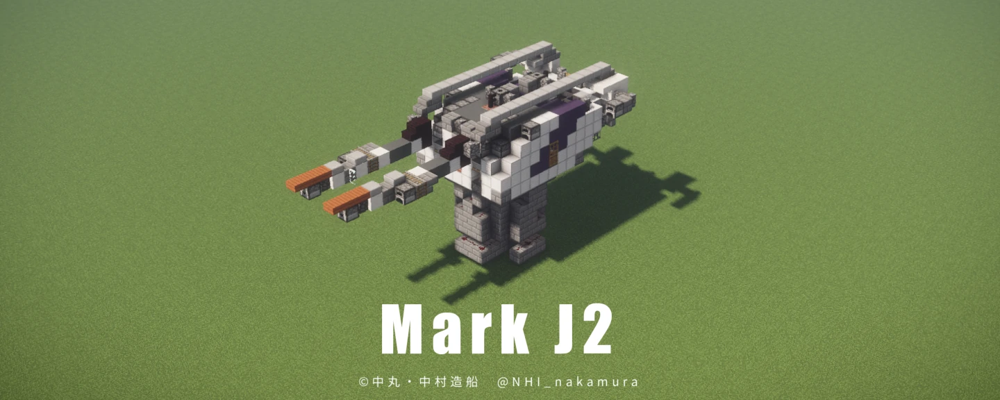Mk.J2 連装砲
- 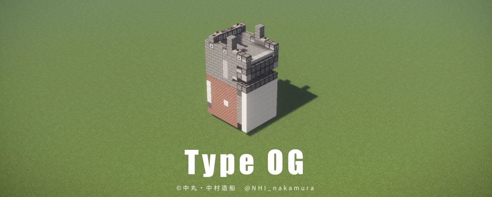TYPE OG 汎用対艦拡散砲
- 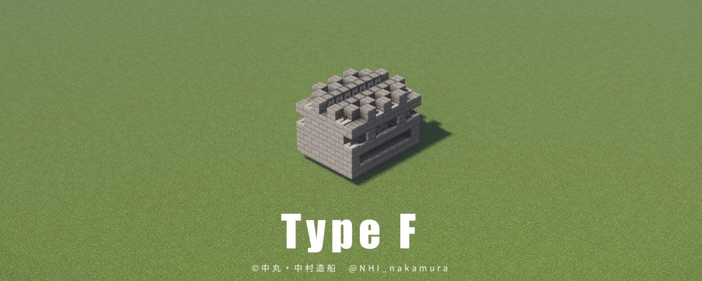TYPE F 汎用VLS（対空拡散砲）
旧世代
古い作品
過去のすべての作品の画像を見られます。